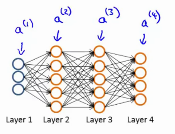

Week 5 notes: Neural networks - learning
More general notes can be found on the coursera website
Cost Function
Lets make a neural network
training set { ( x ( 1 ) , y ( 1 ) ) , ( x ( 2 ) , y ( 2 ) ) , . . . , ( x ( m ) , y ( m ) ) } \trainingSetGeneric { ( x ( 1 ) , y ( 1 ) ) , ( x ( 2 ) , y ( 2 ) ) , . . . , ( x ( m ) , y ( m ) ) }
L L L s l s_l s l l l l
s 1 = 3 , s 2 = 5 , s 4 = s l = 4 s_1 = 3, s_2 = 5, s_4=s_l=4 s 1 = 3 , s 2 = 5 , s 4 = s l = 4
h Θ ( x ) k \hTx_k h Θ ( x ) k k t h k^{th} k t h
Lets look at two types of classification problems
Binary Classification
y = 0 y = 0 y = 0 1 1 1 1 output unit
h Θ ( x ) ∈ R \hTx \in \RR h Θ ( x ) ∈ R s L = 1 s_L = 1 s L = 1 K = 1 K=1 K = 1
Multiclass classification (K classes)
y ∈ R K y \in \RR^K y ∈ R K h Θ ( x ) = [ 1 0 0 0 ] ⏟ c a r h Θ ( x ) = [ 0 1 0 0 ] ⏟ p e r s o n h Θ ( x ) = [ 0 0 1 0 ] ⏟ d o g h Θ ( x ) = [ 0 0 0 1 ] ⏟ m o t o r c y c l e \underbrace{\hTx = \mat{1 \\ 0 \\ 0 \\ 0}}_{car} \underbrace{\hTx = \mat{0 \\ 1 \\ 0 \\ 0}}_{person} \underbrace{\hTx = \mat{0 \\ 0 \\ 1 \\ 0}}_{dog} \underbrace{\hTx = \mat{0 \\ 0 \\ 0 \\ 1}}_{motorcycle} c a r h Θ ( x ) = ⎣ ⎢ ⎢ ⎡ 1 0 0 0 ⎦ ⎥ ⎥ ⎤ p e r s o n h Θ ( x ) = ⎣ ⎢ ⎢ ⎡ 0 1 0 0 ⎦ ⎥ ⎥ ⎤ d o g h Θ ( x ) = ⎣ ⎢ ⎢ ⎡ 0 0 1 0 ⎦ ⎥ ⎥ ⎤ m o t o r c y c l e h Θ ( x ) = ⎣ ⎢ ⎢ ⎡ 0 0 0 1 ⎦ ⎥ ⎥ ⎤ K output units
h Θ ( x ) ∈ R K \hTx \in \RR^K h Θ ( x ) ∈ R K s L = K s_L = K s L = K K ≥ 3 K \geq 3 K ≥ 3
Go back to logistic regression
J ( θ ) = − 1 m [ ∑ i = 1 m y ( i ) log h θ ( x ( i ) ) + ( 1 − y ( i ) ) log ( 1 − h θ ( x ( i ) ) ) ] + λ 2 m ∑ j = 1 n θ j 2 \logrCostLongReg J ( θ ) = m − 1 [ i = 1 ∑ m y ( i ) log h θ ( x ( i ) ) + ( 1 − y ( i ) ) log ( 1 − h θ ( x ( i ) ) ) ] + 2 m λ j = 1 ∑ n θ j 2 For a NN, we will make a generalization of this, that works with K output units. Initially, lets update the brackets
J ( Θ ) = − 1 m [ ∑ i = 1 m ∑ k = 1 K y k ( i ) log ( h Θ ( x ( i ) ) ) k + ( 1 − y k ( i ) ) log ( 1 − h Θ ( x ( i ) ) ) k ) ] \nnCostGeneric J ( Θ ) = − m 1 [ i = 1 ∑ m k = 1 ∑ K y k ( i ) log ( h Θ ( x ( i ) ) ) k + ( 1 − y k ( i ) ) log ( 1 − h Θ ( x ( i ) ) ) k ) ] h Θ ( x ) ∈ R K \hTx \in \R^K h Θ ( x ) ∈ R K ( h Θ ( x ) ) i = i t h (\hTx)_i = i^{th} ( h Θ ( x ) ) i = i t h K K K
A second term is the regularization term, which sums over all values of i , j , l i, j, l i , j , l Θ \T{} Θ = 0 =0 = 0
λ 2 m ∑ l = 1 L − 1 ∑ i = 1 s l ∑ j = 1 s l + 1 ( θ j i ( l ) ) 2 \nnCostRegularizer 2 m λ l = 1 ∑ L − 1 i = 1 ∑ s l j = 1 ∑ s l + 1 ( θ j i ( l ) ) 2 The number of columns in our current Θ \T{} Θ
In totality, the cost function becomes
J ( Θ ) = − 1 m [ ∑ i = 1 m ∑ k = 1 K y k ( i ) log ( h Θ ( x ( i ) ) ) k + ( 1 − y k ( i ) ) log ( 1 − h Θ ( x ( i ) ) ) k ) ] + λ 2 m ∑ l = 1 L − 1 ∑ i = 1 s l ∑ j = 1 s l + 1 ( θ j i ( l ) ) 2 \nnCostGeneric + \nnCostRegularizer J ( Θ ) = − m 1 [ i = 1 ∑ m k = 1 ∑ K y k ( i ) log ( h Θ ( x ( i ) ) ) k + ( 1 − y k ( i ) ) log ( 1 − h Θ ( x ( i ) ) ) k ) ] + 2 m λ l = 1 ∑ L − 1 i = 1 ∑ s l j = 1 ∑ s l + 1 ( θ j i ( l ) ) 2 Notes:
the double sum simply adds up the logistic regression costs calculated for each cell in the output layer
the triple sum simply adds up the squares of all the individual Θ \T{} Θ
the i i i i i i
Backpropagation
We need to min Θ J ( Θ ) \undersetnorm{min}{\T{}} J(\T{}) Θ min J ( Θ ) cost and the partial derivatives.
Given one training example (x , y x,y x , y

Forward propagation:
a ( 1 ) = x \ssb{a}{1} = x a ( 1 ) = x z ( 2 ) = Θ ( 1 ) a ( 1 ) \ssb{z}{2} = \Ts{1}\ssb{a}{1} z ( 2 ) = Θ ( 1 ) a ( 1 ) a ( 2 ) = g ( z ( 2 ) ) add a 0 ( 2 ) \ssb{a}{2} = g(\ssb{z}{2}) \quad \textnormal{add}\quad \ssb{a}{2}_0 a ( 2 ) = g ( z ( 2 ) ) add a 0 ( 2 ) z ( 3 ) = Θ ( 2 ) a ( 2 ) \ssb{z}{3} = \Ts{2}\ssb{a}{2} z ( 3 ) = Θ ( 2 ) a ( 2 ) a ( 3 ) = g ( z ( 3 ) ) add a 0 ( 3 ) \ssb{a}{3} = g(\ssb{z}{3}) \quad \textnormal{add}\quad \ssb{a}{3}_0 a ( 3 ) = g ( z ( 3 ) ) add a 0 ( 3 ) z ( 4 ) = Θ ( 3 ) a ( 3 ) \ssb{z}{4} = \Ts{3}\ssb{a}{3} z ( 4 ) = Θ ( 3 ) a ( 3 ) a ( 4 ) = h Θ ( x ) = g ( z ( 4 ) ) \ssb{a}{4} = \hTx = g(\ssb{z}{4}) a ( 4 ) = h Θ ( x ) = g ( z ( 4 ) )
Intuition
δ j ( l ) \delta_j^{(l)} δ j ( l ) j j j l l l
For each output unit (layer L = 4 L=4 L = 4
δ j ( 4 ) = a j ( 4 ) ⏟ h Θ ( x ) j − y j ⇒ δ ( 4 ) = a ( 4 ) − y \ssb{\delta}{4}_j = \underbrace{\ssb{a}{4}_j}_{\hTx_j} - y_j \Ra \ssb{\delta}{4} = \ssb{a}{4} - y δ j ( 4 ) = h Θ ( x ) j a j ( 4 ) − y j ⇒ δ ( 4 ) = a ( 4 ) − y and we continue doing this for the earlier layers in our network. Note that . ∗ .* . ∗ 1 1 1 one-vector .
δ j ( 3 ) = ( Θ ( 3 ) ) T δ ( 4 ) . ∗ g ′ ( z ( 3 ) ) ⏟ a ( 3 ) . ∗ ( 1 − a ( 3 ) ) \ssb{\delta}{3}_j = (\Ts{3})^T\ssb{\delta}{4}.*\underbrace{g'(\ssb{z}{3})}_{\ssb{a}{3}.*(1-\ssb{a}{3})} δ j ( 3 ) = ( Θ ( 3 ) ) T δ ( 4 ) . ∗ a ( 3 ) . ∗ ( 1 − a ( 3 ) ) g ′ ( z ( 3 ) ) δ j ( 2 ) = ( Θ ( 2 ) ) T δ ( 3 ) . ∗ g ′ ( z ( 2 ) ) \ssb{\delta}{2}_j = (\Ts{2})^T\ssb{\delta}{3}.*g'(\ssb{z}{2}) δ j ( 2 ) = ( Θ ( 2 ) ) T δ ( 3 ) . ∗ g ′ ( z ( 2 ) ) The name backprop comes from the idea that you start from the end and work back to the front, effectively pushing the errors back to the front.
If you ignore the regularization term , we can note that
δ δ Θ i j ( l ) J ( Θ ) = a j ( l ) δ i ( l + 1 ) \frac{\delta}{\delta\Ts{l}_{ij}}J(\T{}) = \ssb{a}{l}_j\ssb{\delta}{l+1}_{i} δ Θ i j ( l ) δ J ( Θ ) = a j ( l ) δ i ( l + 1 ) Algorithm
Given a training set
{ ( x ( 1 ) , y ( 1 ) ) , ( x ( 2 ) , y ( 2 ) ) , . . . , ( x ( m ) , y ( m ) ) } \trainingSetGeneric { ( x ( 1 ) , y ( 1 ) ) , ( x ( 2 ) , y ( 2 ) ) , . . . , ( x ( m ) , y ( m ) ) } Set Δ i j ( l ) = 0 \ssb{\Delta}{l}_{ij} = 0 Δ i j ( l ) = 0 l , i , j l, i, j l , i , j δ δ Θ i j ( l ) J ( Θ ) \frac{\delta}{\delta\Ts{l}_{ij}}J(\T{}) δ Θ i j ( l ) δ J ( Θ )
For i = 1 i=1 i = 1 m ← ( x i , y i ) m \leftarrow (x_i, y_i) m ← ( x i , y i )
Set a ( 1 ) = x ( i ) \ssb{a}{1} = \ssb{x}{i} a ( 1 ) = x ( i )
Perform formward propagation to compute a ( l ) , l ∈ 2 , 3 , . . , L \ssb{a}{l}, l \in 2, 3, .., L a ( l ) , l ∈ 2 , 3 , . . , L
Using y ( i ) \ssb{y}{i} y ( i ) δ ( L ) = a ( L ) − y ( i ) \ssb{\delta}{L} = \ssb{a}{L} - \ssb{y}{i} δ ( L ) = a ( L ) − y ( i )
Work your way back by computing δ ( L − 1 ) , δ ( L − 2 ) , . . . , δ ( 2 ) \ssb{\delta}{L-1}, \ssb{\delta}{L-2}, ..., \ssb{\delta}{2} δ ( L − 1 ) , δ ( L − 2 ) , . . . , δ ( 2 ) δ ( 1 ) \ssb{\delta}{1} δ ( 1 )
Δ i j ( l ) : = Δ i j ( l ) + a j ( l ) δ i ( l + 1 ) \ssb{\Delta}{l}_{ij} := \ssb{\Delta}{l}_{ij} + \ssb{a}{l}_j\ssb{\delta}{l+1}_i Δ i j ( l ) : = Δ i j ( l ) + a j ( l ) δ i ( l + 1 )
In a vectorized way: Δ ( l ) : = Δ ( l ) + δ ( l + 1 ) ( a ( l ) ) T \ssb{\Delta}{l} := \ssb{\Delta}{l} + \ssb{\delta}{l+1}(\ssb{a}{l})^T Δ ( l ) : = Δ ( l ) + δ ( l + 1 ) ( a ( l ) ) T
After exeucting this for loop, we compute the following
D i j ( l ) : = 1 m Δ i j ( l ) + λ Θ i j ( l ) \ssb{D}{l}_{ij} := \frac{1}{m}\ssb{\Delta}{l}_{ij} + \lambda\Ts{l}_{ij} D i j ( l ) : = m 1 Δ i j ( l ) + λ Θ i j ( l ) j ≠ 0 j \neq 0 j = 0 D i j ( l ) : = 1 m Δ i j ( l ) \ssb{D}{l}_{ij} := \frac{1}{m}\ssb{\Delta}{l}_{ij} \quad\quad\quad\quad D i j ( l ) : = m 1 Δ i j ( l ) j = 0 j = 0 j = 0
And it can be proven that the partial derivative \nnPartial = D i j ( l ) \nnPartial = \ssb{D}{l}_{ij} \nnPartial = D i j ( l )